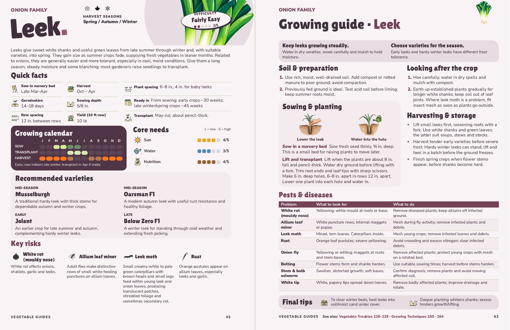
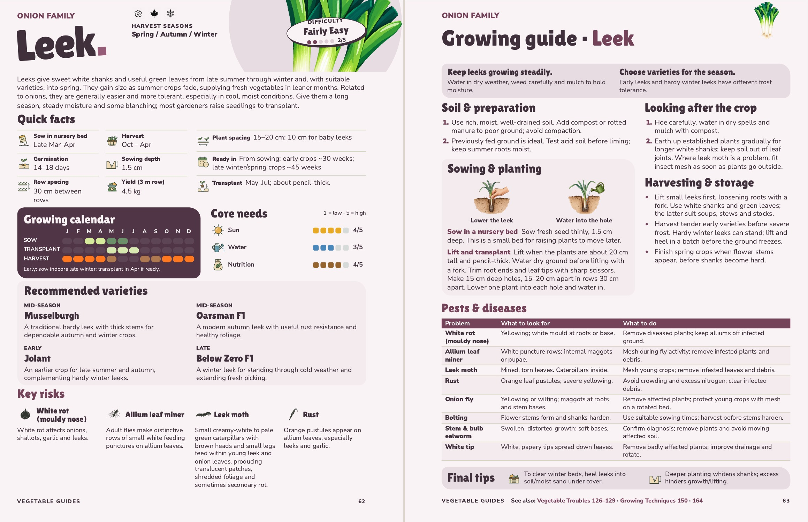

Leek · pages 62–63
The planting instructions cover sowing in a nursery bed and lifting and transplanting. Quick facts and the calendar use the same term. The early indoor dates are in the calendar note.

See also: Vegetable Troubles 126–129 · Growing Techniques 150 · 164
View the metric spread
